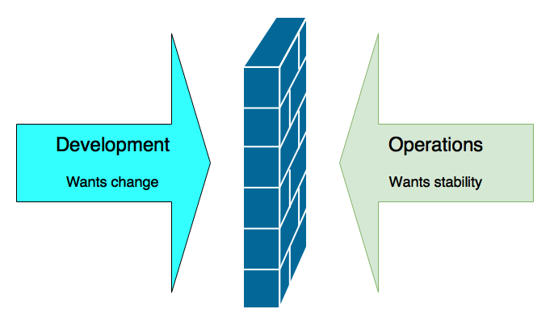
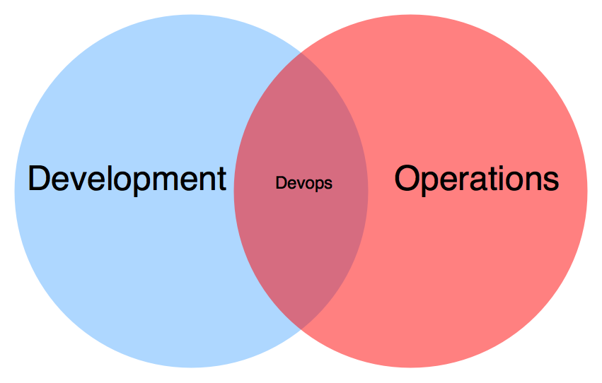
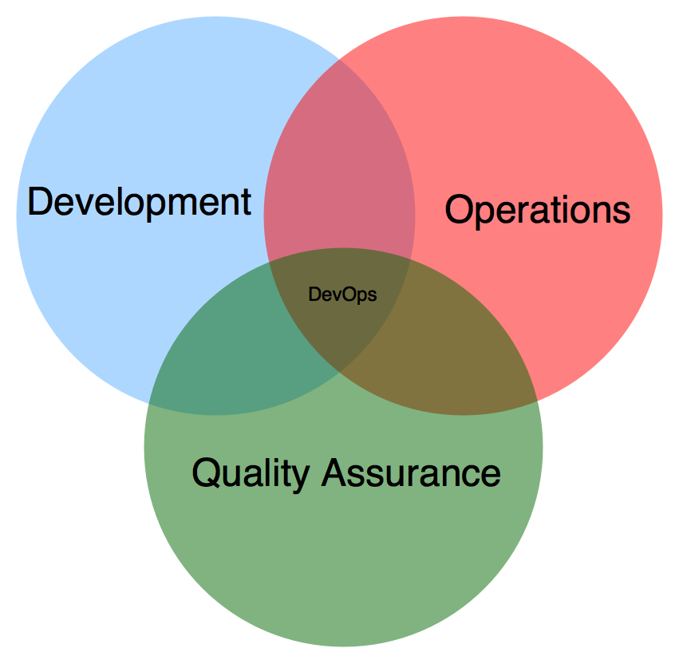
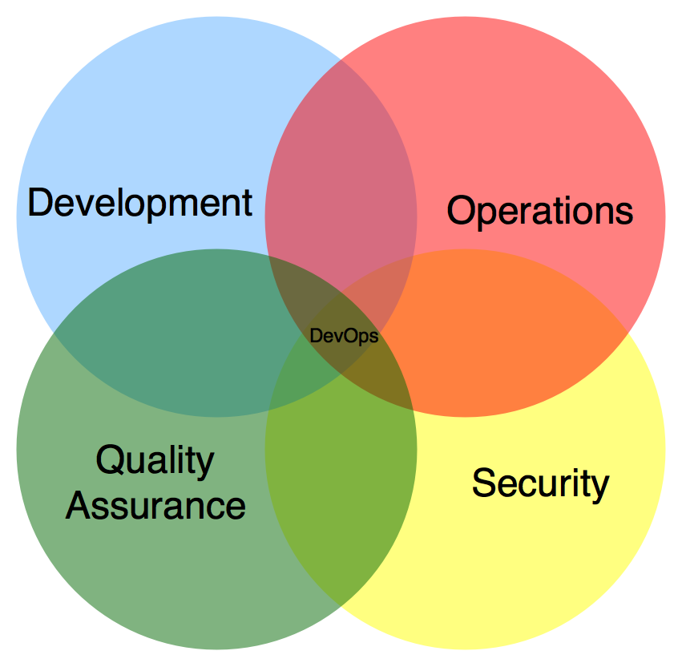
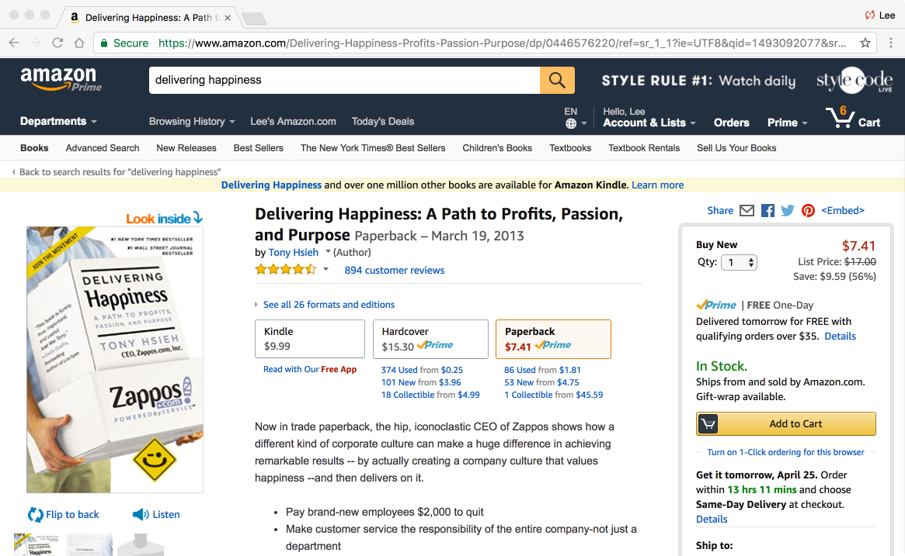

Culture
The Secret Sauce for Successful DevOps Adoptions
Lee Fox
About Lee
- Cloud Architect at Infor
- Agile, DevOps, and ChatOps advocate
- Past Technology Chair of Agile Austin
- Alexa and Google Home Developer
- Co-Author of Effective Gradle Implementation Video Series on Packt
- Trained Innovation Games Facilitator
- Amateur Chef
Housekeeping
- Feel free to ask questions
- Deeper questions may be deferred to the end
What we will cover
- What is DevOps?
- Culture
- Changing culture
What is DevOps?
- Not a methodology
- Not a process
- Not something operations do
- Not something developers do
- Not a person
- Not a team
- Not a set of scripts
It's a philosophy
Addresses contention
Addresses contention
Addresses contention
Addresses contention
C.A.M.S.
- Coined by Damon Edwards and John Willis
- DevOpsDays Mountainview in 2010
C.A.M.S.
- Culture
- Automation
- Measurement
- Sharing
Culture
- People
- Process
- Communication
Automation
- Time improvement
- Creates consistency
- Easier training
- Higher quality
- Enables self-service
Measurement
- Highly important for continuous improvement
- Needed for judgement calls
- Keeps you objective
- and blameless
Sharing
- Increase collaboration
- Better enterprise results
Changing culture
It's hard
"You can’t directly change culture. But you can change behavior, and behavior becomes culture."Lloyd Taylor, VP Infrastructure, Ngmoco
It's hard
"A company's culture represents it's deepest values and beliefs"Insert citation
It's hard
Culture is pervasive in a company. Any change effects everything else in the organization.It's hard
All aspects of culture isn't always visible.Understand your current culture
Company organization
- Find the org chart
- Is it siloed?
- Follow the workload
- Geography
Current problems
- Bad communication?
- Missed deadlines?
- Outages?
- Overtime?
Current strengths
- Strong automation?
- Strong QA?
- Agile?
- Strong leadership?
Changing the culture
Determine your strategy
- Culture eats strategy for breakfast
- You need a general idea of how to effect change
Strategy
- Align to common values
- Direction of attack
- Gather allies
- Determine problems to solve
- Spreading your message
Align to common values
- Removes resistance
- Increases perspective
Delivering happiness
ISBN: 0446576220
You can build common values
- Pair up
- Each pair lists out 5 values
- Each groups with another pair and reduces to 5
- Lather. Rinse. Repeat.
Live up to the values
- Post those values in clear sight
- Find ways to exhibit those values daily
- Hire to those values
Direction of attack
Top down
- Start with upper management
- Create visions
- Inspire
Bottom up
- Starts in the trenches
- Build a buzz
- Gain unstoppable momentum
Bi directional
- Leverage the best of both directions
- Avoid middle management
Gather Allies
Hiring
- Only hire people who align to your new culture
- Don't be afraid to vote someone off the island
Communities of practice
- Enable some group think
- Define a common language
- Promote shared meaning
Compensation
- Not always an option
- Super effective
Determine problems to solve
Where are you metrics painful?
- Downtime
- Software defects
- Missed deadlines
Look for self-service opportunities
- Help other groups automate their tasks
- Help other groups automate your tasks
- Provide scripts
- Adopt ChatOps
Demonstrate the impact
- Any cost reduction?
- Improvement in velocity?
- Increase in stability?
Spreading your message
Use information radiators
- Share common metrics
- Give everyone insight into operational metrics
Go viral!
- Blogs
- Newsletters
- Chat rooms
- Brown bags
Repetition
- Put the word DevOps out there as much as possible
Empathy
Empathy
- People don't always understand each other's pain
- Empathy helps us feel understood
- You feel valued
- You feel trusting
- Barriers are broken down
Building empathy
- Listen
- Make yourself vulnerable
- Align on values
- Be an example
- Recognize effort
- Fill each other's shoes
Other things to keep in mind
Create slack
- You can't improve when you're fully engaged
- You need time to actually make the change
Enable failure
- Leaders should allow people to fail
- Create opportunities to learn
- Make the environment safe to take risks
Don't stop
- Continual improvement
- Don't let the organization backstep
Source Links
- https://en.wikipedia.org/wiki/DevOps
- http://itrevolution.com/devops-culture-part-1/
- https://devops.com/devops-culture-cocktail/
- http://blog.ingineering.it/post/72964480807/empathy-the-essence-of-devops
- https://www.pagerduty.com/blog/hugops-in-practice/
- https://itsanicelife.com/2015/08/24/empathy-the-devops-secret-weapon/
Any questions? 
I hope you have enjoyed the session!
Email: lee.h.fox@gmail.com
Twitter: @FoxInATX